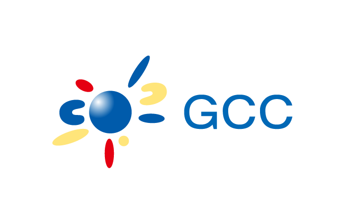

すべての子どもにプログラミングを

CoderDojo（コーダードージョー） 前橋は、参加費無料でプログラミングを学べる小中学生を対象としたプログラミング道場です。
２０２０年からは小学校でプログラミングが必修化されています。２０２５年１月には「大学入学共通テスト」の教科「情報Ⅰ」が新設され、その内容にはプログラミングが入る予定です。
参考：令和7年度以降の試験｜大学入試センター
一足先にプログラミングの世界を親子で体験してみませんか？
Facebook 公式ページで活動報告をしています。
CoderDojo とは？
CoderDojo は7〜17歳の子どもを対象にしたプログラミング道場です。2011年にアイルランドで始まり、世界では86カ国・1,400の道場、日本では全国に140以上の道場があります (2018年5月現在)。
CoderDojo 前橋は、群馬県初の CoderDojo です。
詳しい道場の様子については、次の記事や動画をご参照ください。
- CoderDojoとは? 運営者に話を聞いてみた! (バケモノ.jp)
- 子どものための無料プログラミング道場 CoderDojo をはじめてみませんか (ICT教育ニュース)
- あなたがDojoに来る理由は何ですか? (YouTube)
それぞれインタビュー形式で構成されているので、より具体的なイメージが掴めるかと思います。
CoderDojo 前橋について
CoderDojo 前橋は、２０１７年４月より月１回活動しています。
CoderDojo 前橋はボランティア活動になりますので、参加費は頂きませんが、参加にはプログラミング環境がインストールされたパソコン等の持ち込みが原則必要となります。機材の貸し出しもいたしますので、お気軽にお問い合わせください。
活動内容は、自分自身でクリエイティブな作業をすることが中心になります。予め決まったカリキュラムがあるわけではありません。自分が何を作りたいのか、何をしたいのか、考えながら作業をしていくことになります。それがプログラミングを身に付けるための一番の近道だと思っているからです。
プログラミングを始めたいけど、何をして良いか分からない、どんなツールがあるか知りたい、などの相談にも乗ります。
活動時間の最後にお子様が発表する時間を設けています。自分の作品について話す機会というのは普段あまりないと思いますので、貴重な時間ではないかと思います。
また、原則保護者同伴となっております。お子様同士だけでなく、保護者の方同士の繋がりも大切にしています。
- CoderDojo 代表：関口 悠
-
群馬県前橋市在住。
県内の高校で情報科の教師をしている、一児の父。
マイクロソフト認定教育イノベーター、Google for Education 認定トレーナー、Intel Teach マスターティーチャー、Apple Teacher としても活動している。
日程について
- 第７１回
-
２０２３年４月１６日（日） １０：００～１２：００
場所：NETSUGEN – 群馬県庁32階官民共創スペース
協賛：
- 第７２回
-
２０２３年５月２１日（日） １０：００～１２：００
場所：NETSUGEN – 群馬県庁32階官民共創スペース
協賛：
- 第７３回
-
２０２３年６月１８日（日） １０：００～１２：００
場所：NETSUGEN – 群馬県庁32階官民共創スペース
協賛：
- 第７４回
-
２０２３年７月１６日（日） １０：００～１２：００
場所：NETSUGEN – 群馬県庁32階官民共創スペース
協賛：
- 第１回
- ２０１７年４月１６日（日） １０：００～１２：００
- 第２回
- ２０１７年５月２１日（日） １０：００～１２：００
- 第３回
- ２０１７年６月１１日（日） １０：００～１２：００
- 第４回
- ２０１７年７月１６日（日） １０：００～１２：００
- 第５回
- ２０１７年８月６日（日） １０：００～１２：００
- 第６回
- ２０１７年９月１０日（日） １０：００～１２：００
- 第７回
- ２０１７年１０月１４日（土） １０：００～１２：００
- 第８回
- ２０１７年１１月５日（日） １０：００～１２：００
- 第９回
- ２０１７年１２月１０日（日） １０：００～１２：００
- 第１０回
- ２０１８年２月４日（日） １０：００～１２：００
- 第１１回
-
２０１８年３月４日（日） １０：００～１２：００
- 第１２回
-
２０１８年４月１５日（日） １０：００～１２：００
- 第１３回
-
２０１８年５月２０日（日） １０：００～１２：００
- 第１４回
-
２０１８年６月１７日（日） １０：００～１２：００
- 第１５回
-
２０１８年７月１５日（日） １０：００～１２：００
- 第１６回
-
２０１８年８月５日（日） １０：００～１２：００
- 第１７回
-
２０１８年９月１６日（日） １０：００～１２：００
- 第１８回
-
２０１８年１０月１４日（日） １０：００～１２：００
- 第１９回
-
２０１８年１１月１８日（日） １０：００～１２：００
- 第２０回
-
２０１８年１２月９日（日） １０：００～１２：００
- 第２１回
-
２０１９年１月１３日（日） １０：００～１２：００
- 第２２回
-
２０１９年２月１０日（日） １０：００～１２：００
- 第２３回
-
２０１９年３月１０日（日） １０：００～１２：００
- 第２４回
-
２０１９年４月１４日（日） １０：００～１２：００
- 第２５回
-
２０１９年５月１９日（日） １０：００～１２：００
- 第２６回
-
２０１９年６月１６日（日） １０：００～１２：００
- 第２７回
-
２０１９年７月２１日（日） １０：００～１２：００
- 第２８回
-
２０１９年８月１８日（日） １０：００～１２：００
- 第２９回
-
２０１９年９月８日（日） １０：００～１２：００
- 第３０回
-
２０１９年１０月２０日（日） １０：００～１２：００
- 第３１回
-
２０１９年１１月３日（日） １０：００～１２：００
- 第３２回
-
２０１９年１２月１５日（日） １０：００～１２：００
- 第３３回
-
２０２０年１月２６日（日） １０：００～１２：００
- 第３４回
-
２０２０年２月１６日（日） １０：００～１２：００
- 第３５回
-
２０２０年４月１９日（日） １０：００～１２：００
場所：オンライン
- 第３６回
-
２０２０年５月１７日（日） １０：００～１２：００
場所：オンライン
- 第３７回
-
２０２０年６月２１日（日） １０：００～１２：００
場所：オンライン
- 第３８回
-
２０２０年７月１９日（日） １０：００～１２：００
場所：オンライン
- 第３９回
-
２０２０年８月２３日（日） １０：００～１２：００
場所：オンライン
- 第４０回
-
２０２０年９月１３日（日） １０：００～１２：００
場所：オンライン
- 第４１回
-
２０２０年１０月１８日（日） １０：００～１２：００
場所：オンライン
- 第４２回
-
２０２０年１１月１５日（日） １０：００～１２：００
場所：オンライン
- 第４３回
-
２０２０年１２月２０日（日） １０：００～１２：００
場所：オンライン
- 第４４回
-
２０２１年１月１７日（日） １０：００～１２：００
場所：オンライン
- 第４５回
-
２０２１年２月２１日（日） １０：００～１２：００
場所：オンライン
- 第４６回
-
２０２１年３月２１日（日） １０：００～１２：００
場所：NETSUGEN – 群馬県庁32階官民共創スペース
及び オンライン
- 第４７回
-
２０２１年４月１８日（日） １０：００～１２：００
場所：NETSUGEN – 群馬県庁32階官民共創スペース
及び オンライン
- 第４８回
-
２０２１年５月１６日（日） １０：００～１２：００
場所：オンラインのみ
- 第４９回
-
２０２１年６月２０日（日） １０：００～１２：００
場所：オンラインのみ
- 第５０回
-
２０２１年７月１８日（日） １０：００～１２：００
場所：NETSUGEN – 群馬県庁32階官民共創スペース
- 第５１回
-
２０２１年８月２２日（日） １０：００～１２：００
場所：オンラインのみ
- 第５２回
-
２０２１年９月１９日（日） １０：００～１２：００
場所：オンラインのみ
- 第５３回
-
２０２１年１０月２４日（日） １０：００～１２：００
場所：NETSUGEN – 群馬県庁32階官民共創スペース
- 第５４回
-
２０２１年１１月２８日（日） １０：００～１２：００
場所：NETSUGEN – 群馬県庁32階官民共創スペース
- 第５５回
-
２０２１年１２月１２日（日） １０：００～１２：００
場所：NETSUGEN – 群馬県庁32階官民共創スペース
- 第５６回
-
２０２２年１月１６日（日） １０：００～１２：００
場所：NETSUGEN – 群馬県庁32階官民共創スペース
- 第５７回
-
２０２２年２月２０日（日） １０：００～１２：００
場所：オンライン
- 第５８回
-
２０２２年３月２０日（日） １０：００～１２：００
場所：オンライン
- 第５９回
-
２０２２年４月１７日（日） １０：００～１２：００
場所：NETSUGEN – 群馬県庁32階官民共創スペース
- 第６０回
-
２０２２年５月１５日（日） １０：００～１２：００
場所：NETSUGEN – 群馬県庁32階官民共創スペース
- 第６１回
-
２０２２年６月１９日（日） １０：００～１２：００
場所：NETSUGEN – 群馬県庁32階官民共創スペース
- 第６２回
-
２０２２年７月２４日（日） １０：００～１２：００
場所：NETSUGEN – 群馬県庁32階官民共創スペース
- 第６３回
-
２０２２年８月２８日（日） １０：００～１２：００
場所：NETSUGEN – 群馬県庁32階官民共創スペース
- 第６４回
-
２０２２年９月１８日（日） １０：００～１２：００
場所：NETSUGEN – 群馬県庁32階官民共創スペース
- 第６５回
-
２０２２年１０月１６日（日） １０：００～１２：００
場所：NETSUGEN – 群馬県庁32階官民共創スペース
- 第６６回
-
２０２２年１１月２０日（日） １０：００～１２：００
場所：NETSUGEN – 群馬県庁32階官民共創スペース
- 第６７回
-
２０２２年１２月１８日（日） １０：００～１２：００
場所：NETSUGEN – 群馬県庁32階官民共創スペース
- 第６８回
-
２０２３年１月２２日（日） １０：００～１２：００
場所：NETSUGEN – 群馬県庁32階官民共創スペース
- 第６９回
-
２０２３年２月１９日（日） １０：００～１２：００
場所：NETSUGEN – 群馬県庁32階官民共創スペース
- 第７０回
-
２０２３年３月１９日（日） １０：００～１２：００
場所：NETSUGEN – 群馬県庁32階官民共創スペース
Google カレンダー
メンター募集について
現在、CoderDojo 前橋では、一緒に活動してくれるメンターを募集しています。 Scratch や Minecraft を使ったことがある方なら大歓迎です。
メンター希望の方は、下記メールアドレスまで連絡をお願いいたします。
maebashi.jp@coderdojo.com